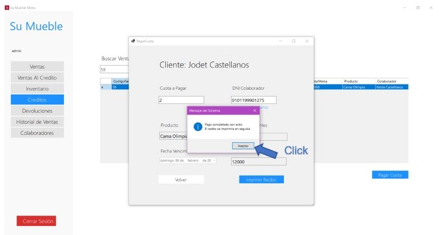
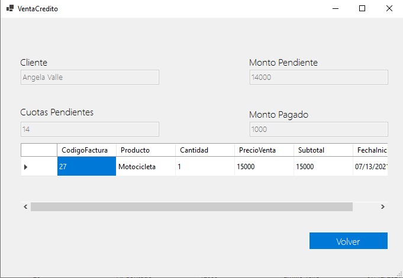
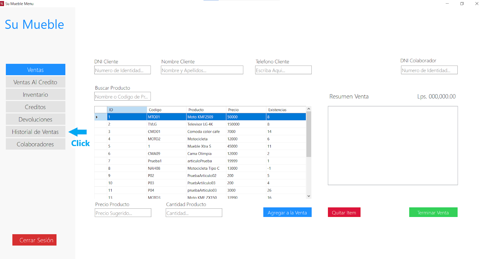

login
Para acceder a la aplicación, el usuario debe hacer uso de sus credenciales de acceso (DNI y contraseña).
• IMPORTANTE:
- En caso el usuario no tenga credenciales de acceso y la entidad ya existiese dada de alta en nuestra base de datos, debe de ponerse en contacto con el usuario administrador de dicha entidad para solicitarle las credenciales.
- Solo el personal autorizado tendrá acceso al sistema.
- ENTRAR: Una vez introducido el usuario y la contraseña, pulsando este botón para Entrar podrá entrar a los módulos del sistema.
Niveles de acceso
-Administrador de ventas El objetivo primordial de la administración de ventas es realizar una adecuada gestión de los procesos con clientes, pero no puede acceder a inventario y colaboradores. En general, el administrador de ventas se relaciona solo con todo lo que tenga que ver con operaciones de venta.
-Administrador de Bodega: El Administrador de Bodega está capacitado para desempeñarse en las áreas operativas de abastecimiento, almacenaje, control de inventarios, producción y distribución.
-Secretaria: El trabajo de una secretaria se centra en las tareas administrativas que se desarrollan. Su labor, en primer lugar, se basa en la atención al cliente, ya que es una persona que debe tener contacto a diario con representantes de otras empresas, clientes, repartidores y demás personas que posean algún vínculo o interés con la empresa. Dentro del sistema solo tiene acceso a la parte de Colaboradores, historial de ventas y crédito. Debido a ello, su accionar es primordial, ya que también tiene bajo su cargo aspectos como la organización, recepción de documentos y gestión de reuniones o entrevistas que contribuyen al buen funcionamiento de la empresa.
-Gerente: Sus funciones son planificar, organizar, dirigir, controlar, coordinar, analizar, calcular y conducir el trabajo de la empresa, además de contratar al personal adecuado, efectuando esto durante la jornada de trabajo. El gerente es el único que tiene el acceso completo al sistema debido a la gran responsabilidad que esto conlleva.
Funcionamiento del producto En esta parte se muestran las partes principales de los procesos implementadas y que se describirán a continuación:
-Ventas: Un proceso de ventas es un nada más que un modelo de reglas, acciones y actividades, utilizadas por todos los involucrados del área comercial y que contenga las siguientes características:
Educativo: capaz de ser enseñado a los involucrados, pudiendo ser utilizado por cualquiera del área;
Medible: tiene condiciones de crecer de forma uniforme, soportando el aumento de demanda;
Previsible: posee indicadores claros para el análisis de resultados;
Previsible: incluye expectativas claras de resultados para ser cumplidos en el período.
-Ventas al crédito: Se le llama venta a crédito a la que tiene el propósito de distribuir el pago del bien o servicio adquirido en un determinado plazo pautado de antemano entre el comprador y el vendedor, de manera que el primero pueda amortizar, por ejemplo, en varios meses.
Agregar Usuarios: En esta parte está permitido agregar diferentes usuarios al sistema, teniendo en cuenta sus limitaciones de acuerdo al puesto que le corresponda.
-Agregar Producto: Al agregar producto lo que estamos haciendo es incrementando nuestro inventario y podemos agregar los productos que sean siempre y cuando se llenen todos los requisitos.
-Pagar Cuotas: Una cuota de ventas es una meta cuantitativa que se asigna a una unidad de marketing. Una unidad de marketing puede ser un vendedor, un territorio, una sucursal, una región, un distribuidor o un distrito. Las cuotas de ventas se usan para planear, controlar y evaluar las actividades de ventas.
Guia (se detalla por pasos lógicos y dividiendo por secciones las diferentes funcionalidades del producto, sistema)
Ventas al Contado

Procedimiento para hacer las ventas al contado
Llenamos los campos con los datos del cliente, sin dejar ningún campo sin llenar porque al dejar uno se le exigirá que lo rellene datos exactos de cliente y de colaborador Luego… busca el producto ya sea por el código o le da click en el que requiera y se ubicará en la parte inferior el precio se verá reflejado y la cantidad del producto requerido sin poner la cantidad le pedirá que lo haga.. Pasa a Resumen Venta una vez hecho lo anterior y puede agregar varios productos y sus cantidades de esta forma con tal haya la cantidad en el inventario que se pide se podrá hacer la venta. Para quitar Ítem el botón Rojo inferior de la tabla de Resumen Venta así eliminamos un producto que no queramos o se haya puesto por error. Con botón Inferior verde terminamos la venta y nos dice la cantidad monetaria que hay que pagar y de esta manera finalizamos la venta ya sea que el cliente requiera nuevamente un producto volvemos iniciar el proceso antes mencionado.
ventas credito

Procederemos a llenar todos los campos correspondientes con los datos requeridos en las especificaciones propuestas en dicha pantalla, tomando en cuenta todos los aspectos y limitaciones para llenar todos los campos de la manera correcta. Al momento de hacer la venta al crédito el sistema requiere mínimo 2 referencias que son las que respaldan al cliente ante cualquier circunstancia y deberá llenar los siguientes datos siempre cumpliendo con los estándares requeridos por los desarrolladores.
También se solicita información del producto a vender y para seleccionaremos la opción “ agregar productos” y nos mostrará la siguiente ventana para elegir el producto a vender. Una vez hecho todo esto simplemente seleccionamos “Agregar a la venta” y nuestra venta al crédito estará efectuada.

Una vez agregado el producto el sistema automáticamente para terminar la venta al crédito nos mostrará la siguiente ventana para finalizar con nuestra venta.
Inventario
Procedimiento para agregar un nuevo producto al inventario
-
Procedimiento para agregar un nuevo producto al inventario.
- Cuando el usuario inicie sesión en el sistema, tiene las opciones para elegir lo que quiere hacer en el menú principal de todo el sistema.Para que el usuario pueda agregar un nuevo producto al inventario, lo primero que deberá hacer será seleccionar la pestaña que diga: “Inventario”. (En esa misma pestaña el usuario también puede actualizar los productos existentes)
- Ya seleccionada la opción de “Inventario”, el proceso para agregar un producto sería seleccionar el botón que diga: “Nuevo”, entonces le da click a ese botón.
- Cuando ya seleccionamos el botón “Nuevo” aparecerá una ventana en donde se nos solicita ingresar: el código y nombre del producto, el precio y existencias del producto y por último, seleccionar de qué categoría es el producto que queremos agregar. Una vez ingresada toda la información correspondiente, damos click en el botón de: “Hecho”, y listo, el producto será agregado al inventario satisfactoriamente.
- Debemos tomar en cuenta que debemos ingresar valores numéricos en el precio y existencias del producto, de no ser así, nos lanzará un ventana emergente, solicitando al usuario ingresar valores numéricos. Por ejemplo:
- También, debemos tener en cuenta de que debemos llenar todos los datos, la información solicitada no puede quedar incompleta. Si hay datos incompletos, el sistema nos lanzará otro mensaje. Por ejemplo:
- Ahora, si ya no queremos agregar un nuevo producto y queremos salirnos de la ventana de agregar nuevo producto, le damos click al botón de “Cancelar”.


Procedimiento para actualizar un producto existente
- Para actualizar un producto lo primero que se deberá de hacer será seleccionar la fila del producto que deseamos actualizar. En este caso el producto que deseo actualizar es “MOTO KMF2509”, por lo tanto seleccioné
- Incluso, otra opción más fácil para buscar el producto a actualizar, sería buscándolo en el buscador de producto. Entonces daríamos click en el buscador de producto, y luego escribimos el producto a buscar ya sea por su código o nombre Artículo.
- En este caso seguiré utilizando el mismo producto de “MOTO KMF2509”, o también podría buscarlo por su código, en este caso el código de ese producto sería: “MTO01”, de ambas formas funcionan bien. Mostraré ambas formas.
- Buscando el producto a actualizar por su nombre. (podemos buscarlas ya sea escribiendolas con letras mayúsculas y minúsculas)
- Buscando el producto a actualizar por su código. (podemos buscarlas ya sea escribiendolas con letras mayúsculas y minúsculas)
- Otra forma de buscar el producto que queremos actualizar es por el buscador de categoría, podemos elegir cualquiera de estas opciones: “Todos”, “Electrodomésticos”, “Camas” o “Motocicleta”. Si andamos buscando el producto por una única categoría entonces solo los productos de esa categoría aparecerán y luego seleccionaremos el producto a actualizar.
- Luego de haber mostrado las formas de buscar un producto, el usuario puede utilizar cualquiera de esas formas, y cuando el usuario ya haya seleccionado la fila del producto que quiere actualizar le da click al botón “Actualizar”.
- Recordemos que en mi caso busqué el producto en el buscador de producto por su código, el cual sería: ”MTO01” y seleccioné la fila del producto, ya después le damos click al botón de: “Actualizar”.
- Luego de haber dado click en “Actualizar”, aparecerá una ventana donde ya podrá actualizar los datos que querrá cambiar. Como podrá notar hay un campo que no cambiará y es el “Código”. De ahí, lo demás puede ser actualizado. Si quiere cambiar el nombre, precio, existencias y categorías del producto lo puede hacer. No hay problema si quiere hacer un cambio en un solo campo, de igual forma se actualizará.
- Recuerde que debe ingresar valores numéricos en el precio y existencias, de no ser así lanzará un mensaje de error. Al igual, si deja algún campo vacío, el sistema le mostrará otro mensaje de error.
- Una vez ya hecho los cambios en cualquier campo, le da click en “Hecho”. En mi caso, el único cambio que hice fue cambiar el precio. Antes eran 50000 y el cambio que hice es de 70000 y luego de click en “Hecho”.
- Una vez dando click en “Hecho”, va a aparecer una ventana emergente que dice: Guardado con éxito y damos click en “Aceptar”.
- Como puede ver, el cambio se actualizó correctamente. Anteriormente el precio unitario consistía de 50000 lps, ahora consta de 70000 lps. Así mismo, se puede seguir actualizando el nombre de ese mismo producto, la cantidad disponible y a qué categoría pertenece. Lo mismo puede hacer para cualquier otro producto existente en el inventario.
- Ahora, si ya no quiere actualizar un producto y quiere salirse de la ventana de actualizar producto, le da click al botón de “Cancelar”.
La primer fila en donde está ese producto.


Creditos
Pago de creditos


Luego damos “Click” en el botón pagar cuota.
Continuamos con llenar los datos que se le piden en el formulario sin dejar campos vacíos porque no se le permite. Al tener los datos completos procedemos a dar “Click” para imprimir el recibo.

Un breve mensaje confirmando el pago de la cuota.

Damos “Click” en “Aceptar” para continuar.
Al final visualizamos el recibo del pago o abono, para ser impreso para el cliente.
Colaboradores
Agregar Colaboradores al sistema
- Una vez ingresando al sistema principal nos dirigimos a la opción de “Colaboradores” y presionamos el botón “Nuevo”

- Al seleccionar el botón “Nuevo” nos mostrará la siguiente ventana para ingresar todos los datos del nuevo colaborador. En donde tenemos que llenar los siguientes datos y una vez ingresados todos seleccionamos “Hecho” para guardar todos los cambios.
Actualizar un colaborador
- Nos situamos siempre en la ventana principal y elegimos “Colaboradores” y seleccionamos el botón “Actualizar”
- Una vez seleccionando “Actualizar” nos mostrará la siguiente ventana en donde debemos de llenar los campos especificados para dicha acción siguiendo siempre los lineamientos.”

Desactivar un Colaborador
- Estando situados siempre en la ventana principal de “Colaboradores” seleccionamos el colaborador que deseamos desactivar o eliminar de nuestro sistema:

- Y a continuación solo presionamos el botón de “Terminar Contrato”:

devoluciones
Procedimiento para hacer una devolución de cualquier venta.
- Lo que haremos a continuación es ingresar al menú principal y dirigirnos a la opción de “Devoluciones”. (solo personal autorizado)

- Procederemos a buscar por el nombre del cliente para hacer la devolución de la venta y damos “Click” en ella para seleccionarla.

- Luego damos “Click” en el botón “Agregar”.
- Continuamos con llenar los datos que se le piden en el formulario sin dejar campos vacíos porque no se le permite. Y damos “Click” en hecho.
- Y ya listo se realizó la devolución de la venta.
historial ventas
Revisar el historial de ventas
- Si el usuario quiere consultar información de ventas, primero debe iniciar sesión. Si el usuario ingresa mal cualquiera de los dos campos no lo dejará ingresar.. Una vez ingresado los datos correctamente y le de click al botón de entrar aparecerá el menú principal.
- Una vez que el usuario ingrese al sistema iniciando sesión podrá ver el menú principal de todo el sistema y sus opciones, Deberá seleccionar la opción de Historial de Ventas para acceder al historial de ventas.


Una vez seleccionado ver el formulario de Historial donde podrá buscar las ventas solo por el nombre del Cliente, podrá ingresar el nombre de cliente para ver sus comprar realizadas

- Ya cargado el formulario podrá visualizar el historial de ventas con sus detalles como: Código de Factura, Tipo de Venta, Tota, Nombre del cliente, Fecha de compra y cancelación, Prima, cuotas y Colaborador.
- Se abrirá una nueva ventana la cual tendrá más información específica del cliente seleccionado como ser: Código de Factura, Producto, Cantidad, Precio venta, Subtotal, Total.También podrá saber el Nombre del Cliente, su DNI (Identificación) y el Monto.
También está el botón ver detalle que desplegará lo que contiene dicha venta seleccionada en color azul.
 
Si el usuario quiere ver más información de una venta en específico puedo hacerlo, esto dándole click al botón Detalles.

clientes
preguntas frecuentes
¿Qué es el login?
Es una combinación de números y letras que sirve para identificar a un usuario dentro del sistema. Un proceso con el que se denomina el comienzo de una sesión en un sistema informático, usualmente compuesto por el pedido de un nombre de usuario (username) y una clave (password), como medio fehaciente de autentificar la identidad del usuario.
¿Qué pasa si olvido mi contraseña?
Ponerse en contacto con el gerente general de la empresa para tener acceso a ella o cambiarla a su vez.
¿Puedo acceder a todas las funcionalidades del sistema con cualquier rol?
No, cada rol dentro de la empresa contiene distintas utilidades ya que el único capaz de visualizar todo es el gerente general.
¿En ventas al crédito puedo asignar más de un producto a una venta?
No, debido a que se hará la venta por productos independientes por seguridad y fiabilidad de los pagos venideros.
¿En ventas al contado puedo asignar más de un producto a una venta?
Si, Aquí no encontramos límites para asignar artículos a una venta.
¿Se puede actualizar un producto sin haber seleccionado alguno?
No, existe una validación que muestra un mensaje que no hay ningún producto seleccionado.
¿Qué pasaría si se pierde la conexión a internet?
Las computadoras que no son la principal no podrían hacer uso del sistema.
¿Se puede acceder al sistema fuera de la empresa?
No, la base de datos del programa está instalada en una computadora principal dentro de la empresa y la cual no es accesible desde fuera.
¿Múltiples computadoras pueden usar el sistema?
Si, siempre y cuando estén conectadas a la misma red wifi.
Glosario de Términos
Menú Principal
Ventas: Sirve para poder ingresar al apartado de Ventas al contado y realizar la venta.
Ventas al Crédito: Sirve para poder ingresar al apartado de Ventas al Crédito y realizar la venta.
Inventario: Sirve para ingresar al apartado de actualizar el inventario del almacén o poder ingresar inventario nuevo.
Créditos: Sirve para hacer la búsqueda de una venta al crédito y poder pagar la cuota correspondiente.
Devoluciones: Sirve para ingresar productos que los clientes devuelven por motivos justificados, también le permite ver información general como de qué clase es la venta si al crédito o al contado, fecha para poder proceder a llenar los datos de la devolución.
Historial de Ventas: Sirve para poder visualizar el historial de las ventas realizadas por la empresa.
Colaboradores: Sirve para poder visualizar la cantidad de colaboradores que hay en la empresa y hacer ciertos cambios.
Cerrar Sesión: Sirve para cuando el colaborador o usuario que esté utilizando el sistema decida cerrar el programa.
Ventas
Agregar a la Venta: Con esto el colaborador puede realizar una venta al contado, solo seleccionando el Ítem o Producto que se va a vender.
Quitar Ítem: Este botón le permite al colaborador quitar un producto o Ítem que el cliente decida no llevar o que exista algún error en los productos seleccionados.
Terminar Venta: Con este botón el colaborador puede terminar la venta que se está haciendo, generando la factura.
Inventario
Actualizar: Con este botón el usuario puede cambiar las propiedades de un producto ya existente en inventario, como ser: Código, precio, categoría, nombre y existencias.
Nuevo: El colaborador puede ingresar nuevos productos y guardarlos con sus respectivas propiedades (Código, precio, categoría, nombre y existencias).
Crédito
Pagar Cuota: El colaborador puede ingresar los datos de la cuota que se va a pagar por un producto, estos datos son: Cantidad de la cuota, DNI del colaborador que realizó el cobro de la cuota, Producto, Fecha de Vencimiento, Cuotas Pendientes, Monto Pendiente.
Imprimir Factura: El colaborador imprime la factura una vez realizado el pago de la cuota.
Devoluciones
Agregar: Le permite al colaborador ingresar los datos de devolución, estos son: Código de Factura, Motivo de la Devolución, Producto, Cantidad y Observaciones del Estado del Producto.
Historial de Ventas
Hecho: Se guardan los datos ingresados de la devolución.
Ver Detalles: Permite al colaborador ver más a detalle los datos de una venta realizada.
Colaboradores:
Actualizar: Permite ver o cambiar los datos de algún colaborador, como: DNI, Nombre, RTN, Fecha de Nacimiento, Clave, Puesto, Correo, Telefono, Fecha de Contrato, Fecha de finalización y Dirección.
Nuevo: Permite ingresar un nuevo colaborador a la empresa tomando sus datos personales.
Terminar Contrato: Se usa cuando a un colaborador se le quitó o terminó el contrato, por los cual ya no será parte de la empresa.